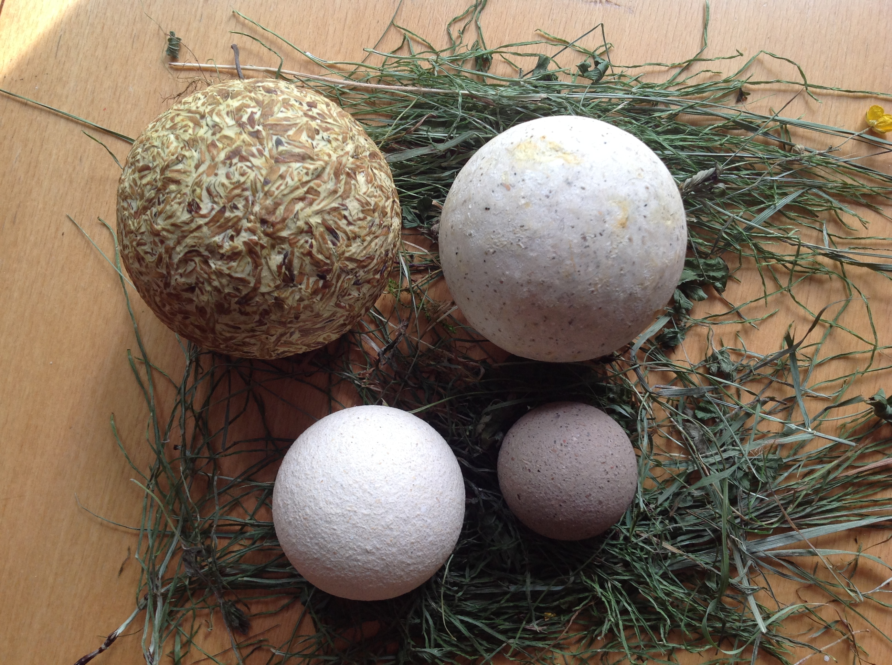
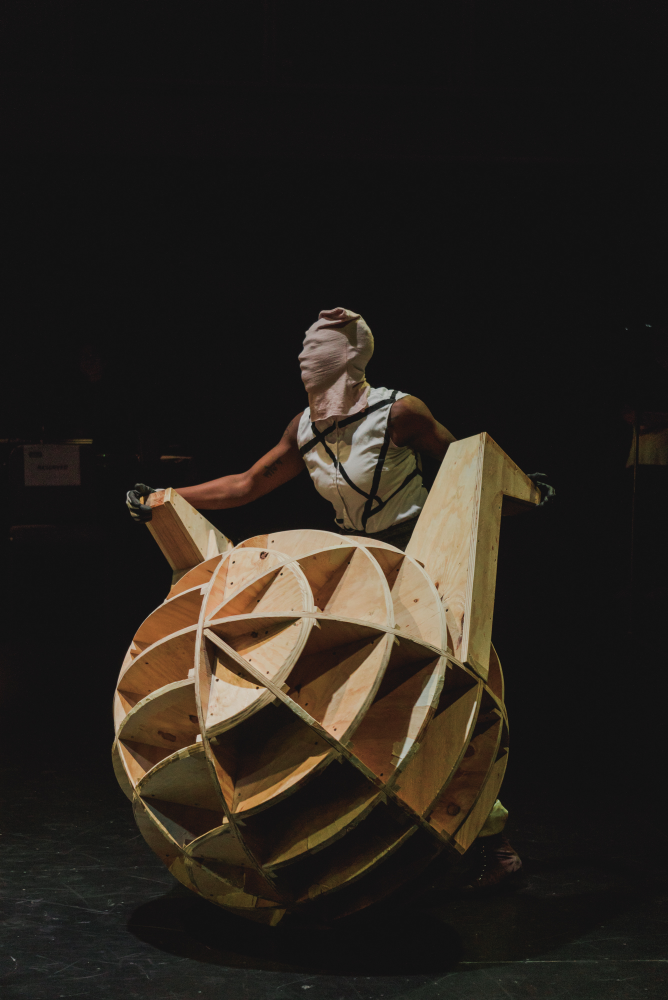
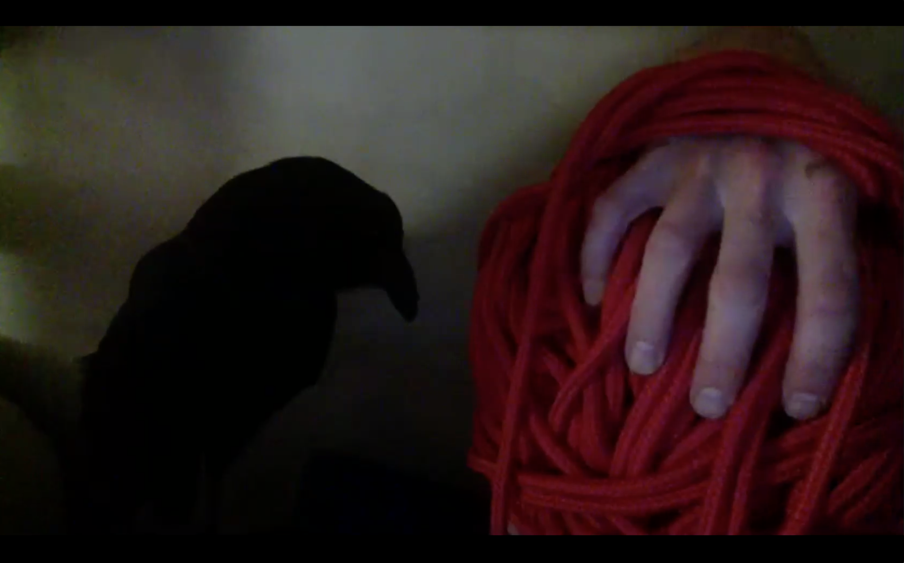

(edited with feedback from Cole Highnam, Robert Kocik and Brenda Iijima)
This journal traces my thoughts as I dove into a new work cycle in 2018.
The work was first titled as Landing Sites. During the Saari residency in summer 2019, the title of the work changed to
patch the sky with 5 colored stones.
This digital platform which the pandemic brought about, allowed me to bring to fruition different aspects of my process, including writing. This journal covers a research period (2018-2019) based on movement for the solos that I performed (watch here: part 1 , part 2 and post discussion ). In general, the writings are also a reflection on movement and performance, portraying the original foundation on which the work would have been created if performed at The Chocolate Factory in September 2020.
the body, each organ or energy point expanded to connect with a location in the room. The score Centers and Edges 1 allowed these connections to occur in specific ways. From sensing matter as mattering an experiential measuring nonlinearly was developed into movement scores.
At BkSD September 2018:
The
corps
[body in French] as matter
The
corps
[body in French] as an
organism
–Daria Faïn
“Organism that body”
–Madeline Gins
Reality as movement. Nothing else. Inhale to exhale, day to night, the rupture of a sound, wind, growth, decay, seasons, aging, birth, waves, the flight of a bird across the sky, digesting … it all passes. Paradoxically it is a constant. Movement as reality within the experience in how it happens. Our experience is within how it happens––an open or selective perception of what the movement is and isn’t—where one is, in that.
A gap between movement and its experience isn’t a disembodiment of now.
Movement teaches not-hold-on-to within absolute axiallity.
Being in potentiality in the now—undissociated from past and future, affecting both. A possibility to slip into absoluteness and flop into bliss—Oh yes! Yes! The paradox of being in our skin and unborn at once. The orgasm!
FOOTNOTES
1 Centers & Edges is a score that I developed in 2001 locating different centers and edges of the body and the environment. Centers and edges can be located anywhere such as the skin, bones, orifices, organs, ideas and emotions, all in a continuum with the body, mind and our environment.
First performance at BkSD, Fall 2018
An intimate audience. The work came out as sequences of movements through the process of inquiring into the bodymind as matter. The intrinsic relationship between our expansive mind and the limits of what we perceive as our body is a dance. From the simple constant inherent adaptation that we go through at every moment to do anything, to the way we educate ourselves to expand our possibilities to do whatever we need, or dream to do. We are in a process of measuring. This is not a linear activity. To expand this into a fuller experience of dimensions, one can break down the process of perceiving by being into ‘intra-action’ to the point where there is no difference between absolute and contained/relative space. In this performance, my bodymind as a measuring tool was very acute and allowed me a velocity in space that I haven’t felt for a long time. A multidimensional experience of scaling within the modalities 2 of the bodymind with the immediate and absolute environment. I felt like I was connected with every part of the room and beyond. I could go fast, perceiving many connections at once, playing swiftly within the different stratums.
The goddess Maya reveals that illusion is about measure (ma), and this dynamic of making is an illusion for which the meaning to put to measure is the key to its translation or expression. The measure of every aspect of the work—a convergence of experiences—creates what it is. Its levels of recognition, internal and external, is in flux and constant reconfiguration because ultimately our perception is so conditioned to changeable parameters. The expression or language is how we can articulate levels of recognition. This articulation stems from the ‘on the moment’ selective reference points that one might have as moving, either physiologically, causally, emotionally, intellectually, and interdependently. At some point it all happens at once as a continuum where references become like clouds in the sky dissolving.
FOOTNOTES
2 The modalities I am referring to are physical, emotional, energetic, intellectual, causal, psychological as well as flow.
A positive experience of solitude, the aloneness was soft and giving. Discovering that my choreographic materials were tangible matter was satisfying. Pacing the language of what was developed at BkSD— being in its embodiment. There are stages to get there from opening the space to possibilities, recognizing the patterns in which it manifests and consequently the language it forms, and then the many ways it is expressed in the present moment. The sensuality of living in that city was truly a pleasure and nourished that process.
For the second performance, I had a bad cold and wasn’t breathing at full capacity. The work wasn’t at its full potential—more like walking through a movement score. Still, there was the sense of an instant, transformative experience communicated with the audience. This is part of my ability as a performer. The question is how to carve that into a piece.
Meeting with Christian was a delight—various multidimensional space-time encounters blurring intimacy and spaciousness. Melanie was also wonderful, and the question of interacting with another dance artist is complex. How can we manifest that ungraspable magnetism that brings the two of us together, dancing or not?
I was weary from just moving. What is a lack of spontaneity?
The performance was very grounded by the Mandala of the Five Dakinis 3 practice and it unfolded smoothly. I am continuing the residency at BkSD, diving into the content and feeling out what sustains the work as a practice and what depletes it.
Repetition is a space to reinvent what is. Multiple deaths and rebirths of the containers that hold the action, is re-inhabited over and over until we become the container and the content as one. But the experience of this is never the same.
FOOTNOTES
3 The Mandala of the Five Dakinis, developed by Lama Tsultrim Allione, to bring emotional transformation onto the spiritual path.
Taking the time to write about the process and to read is so nourishing. I cannot believe how starved of this I have been in the last few years.
Working with regard to the installation 4 to understand the principles of Outer/Inner/Secret. Question: how to convey these principles in the shared space of the performance?
We were interested to break down as much as possible the agencies of what brings us together in performance. INNER 1: From the individual intention to be part of it as a collaborator, to the process of gathering our creative minds and the manifestation of our intentions, to their renderings: OUTER. And then finally arriving at the same spacetime with the audience: INNER 2. The different threads that finally bring us in the same space at the same moment involved in unfolding the drama (action in Greek) together: INNER 3. The installation was conceived to experience these steps for the audience. As if their penetration of the space was the ignition of its heartbeat to come alive: SECRET. The Dakini Mandala and the character 包 bao (envelop) as the container for the action and the audience, aims to create distinctions between OUTER/INNER/SECRET. It is in relation to what is internal/interior and external/exterior. This will be an experience with the mobility of the partitioning of the space. It is a choreography in itself as a mutable physical space for the audience. Much more would have been elaborated if the pandemic didn’t strike and cancel the performance.
FOOTNOTES
4 The installation is a contemplative space that we are working on for the performance knowing now that we will not have the occasion to do it as planned at the Chocolate Factory in September 2020.
Talking about the application of Outer/Inner/Secret as a way to relate to the audience in the piece itself, the performance space, the book, and the exhibition. What is the role of each aspect? How does information complement itself for the audience? We talked about Begging 5 and how holding the space was important. Could a person hold the space in different ways and times within the installation? What are the essential things I want to say and why do I need more than ‘the dancing’?
FOOTNOTES
5 BEGGING #1: Detoxification of Preconceptions About Money A hunger strike/performance practice that I began in 2012, to bring my full attention on the problems intrinsic to performance and economics. This began as a personal/professional necessity and ultimately opened up a questioning of our field of performance in relation to society at large.
About to enter the Saari Residency. 6 Trying to envision our goals.
FOOTNOTES
6 The Saari Residence, maintained by Kone Foundation, is a residence located in Mynämäki, Southwest Finland, for artists of all disciplines and nationalities. Tuomas Laitinen, Christian Konrad Schröder, Robert Kocik and Daria Faïn were there in July 2019.
SAARI JOURNAL June 27 - July 6
we spoke about curtains as envelopes
a womb-like site
inspired by the Chinese characters 包 bāo (envelop), as an action container for what is released, hidden, exposed, opaque, heard, whispered, revealed
The work begins each day with the Mandala of the Five Dakinis
7
meditation, as a common space, where our minds meet.
Between the mandala and our construct of reality narration emerged.
e.g. Christian forgot his wooden instrument in Vienna
and the White Dakini gave me a stick to knock my head
to keep my mind in spaciousness
the stick becomes a featured object.
Tuomas Laitinen (TL): preparing for the performances
what this entails as performers vs.
(no) preparation as audience.
Approaching
is the preparation for both.
Robert Kocik (RK): We should track the energy that it takes to make, to do—every
aspect of how we get to where we go:
our time—envisioning, preparation, effort, distance, money, sacrifice, foiling, certitude, doubt.
Christian Schröder (CS): frustration—opening the 'negative' experience as a mutable agent.
Dramaturgy, worked through.
i.e. the bubble pierced, opens Christian
8
out on his isolation with his computer
or, what Tuomas experienced with the Blue Vajra Dakini:
to breathe underwater,
change perspectives, reconfigure.
"Agency is about changing possibilities of change entailed in reconfiguring material-discursive apparatuses of bodily production, including the boundary articulations and exclusions that are marked by those practices in the enactment of a causal structure. Particular possibilities for (intra-)acting exist at every moment, and these changing possibilities entail an ethical obligation to intra-act responsibly in the world's becoming, to contest and rework what matters and what is excluded from mattering." Karen Barad, Meeting The Universe Halfway
RK: Speaking of the Esklepian experience, or the darkroom 9 — dreaming what it is.
TL: Listening to his experience of '12 etudes on everlasting life'
10
Dramaturgical notes:
Do we need a climax or not? Are things going in one direction?
For instance:
In the meditation of the Five Dakini Mandala the way we dissolve the object given is a consummation of its symbol.
This, as a resolution. A dissolution as a climax.
A dissolution revealing
why
the object is given and the effect of the dissolution.
Dissolution as empowerment.
Playing with the
collective consciousness
of the symbol in dialogue with the personal experience within the narrative. The fascination for the most intimate experience transcended in the 'common mind'.
[playing with the archetype of the symbol is in a dialogue with the
collective consciousness
as well as a personal experience of the narrative.
RK: change the notion of:
'human'
MADE
'machine'
MADE
'Earth'
MADE
DF: A structure––
approaching, enacting, dissolving.
How people arrive inside.
What is temporality released, hidden, exposed.
We spoke about curtains.
Observing the objects in the center
cushions/ballspaper
the configurations of their use in space.
lapses of time
choreographic constellations of our reflective functions.
What is left
there.
Useful to reconfigure intertwined inner/outer
Centers & Edges.
11
Remaining alert and fresh between what was, is, and transforms.
Reactivates.
A question: is it beneficial and for whom?
[to us, let's keep asking
doing it
and asking
the question]
bringing the question of expectation
how we manufacture climax [context of theater dramaturgical]
and let the experience itself teach us
what we need to know
Landing Sites as it stands
After a period of being nine months in the studio
by myself
the objects in the center
choreographic constellations of our reflective functions
kept me reconfiguring
intertwined inner/outer Centers & Edges
remaining alert and fresh between what was, is and transforms.
Reactivated.
Robert making a 'globe' –– task
me moving––two makings.
Mattering void and mass.
It was nice to be in silence
having the audience moving that way.
The way they did.
They moved around like curtains––
a liminal exterior and interior portal
to move in and out from.
How to communicate this?
Maybe working with a fake audience.
12
All to be reconfigured: space, audience, performers, objects, sound, what we wear.
FOOTNOTES
7 Five Dakini Mandala: Developed by Lama Tsultrim Allione to bring emotional transformation into alignment with the spiritual path. A template of wholeness, the mandala has as its basic structure the center and four directions, represented by five families of elements, colors, seed syllables, emotions, psychological types, and wisdoms.
8 Christian Schröder is, among other things, a sound artist/musician who works with digital software to create sounds.
9 "darkroom (Greek abaton) was used in Mediterranean sanitariums (asklepions) from roughly 1200 BCE to 400 CE for incubation of curative words and dreams." From Supple Science by Robert Kocik
10 12 etudes on everlasting life (2010), is a work by Tuomas Laitinen: a series of twelve performances that searched for twelve ways to practice an eternal life.
11 Centers & Edges is a score that I developed in 2001 locating different centers and edges of the body and the environment. Centers and edges can be located anywhere such as the skin, bones, orifices, organs, ideas and emotions, all in a continuum with the body, mind and our environment
12 Fake audience: I first experienced this process, working with poet/ theater director Fiona Templeton who’s work deeply engages the audience's experience in different relationships within the actors’ actions, and uses 'fake audience' to develop her directing/staging.
 Pictured above: Ceramic globes of different sizes and colors, created by Robert Kocik
looking to Tuomas’
dramaturgical notes/drawings
catharsis, in action
the integration of microphones into the globe
sensory activates, fuses, audio and vision
with
assisting protuberance
(acupuncture point)
how what I found yesterday
the inner outer spiral
from toe to finger
arm forward
white daikini and falling into the blue
sinking into the blue
becoming a reflection
or falling into the abyss into quiescence
Tuomas reading what happened
creating the afternoon’s thread
again between discursive modalities
and what pushes us to invention
motivation to determine
the self vs. the mandala
which strips the self
but the mandala could become
an apparatus
always coming back to the dichotomies of language
 Pictured above: interior of a ceramic globe with a microphone inserted into it. (still from
Christian Schröder video
)
Pictured above: interior of a ceramic globe with a microphone inserted into it. (still from
Christian Schröder video
)
The beneficial aspects of the work
a means
unfolding internal encumbered patterns
with their causality
within self, family circle and then to the social realms
theater
= an instrument of observation
as a tool in ancient Greek
Projecting outward––mirroring
to see within our inner folds
and discern
what that is
as a transformed reflection.
An internal technology invoking
the container of Landing Sites
Projection allows what is internal
intimately unidentified
beyond self
as archetype
acting as recipient.
The mandala
magnetizes discernment
fused as a prism
by the light in the heart.
I use acupuncture points as a matrix
between inner and outer worlds.
A question for Tuce:
is it possible to create a prism of light
that moves evenly across the room?
Thinking of the narrative.
Because we are together, bringing as common our inner and secret archetypes as we explore our minds through the practice of the Mandala of the 5 Dakinis; the object given to each of us by the Dakinis becomes symbolic dialogues as a narrative.
Through our process, these archetypes start to travel in each other's minds and take different meanings.
i.e: the White Dakini gave me a stick to knock my head to remind me of the expansion of my mind.
And Christian forgot his stick to play his wooden instrument. So I can give him my stick.
Through the narration, the stick takes on different meanings.
Or the knife CS was asked to sharpen to pierce the bubble in which he saw himself with his computer.. And the knife that appeared in my mind.
[something like this might need to happen on stage]
Dramaturgy as a technology rendering the unfolding of action as drama.
Drama = action in Greek.
Additional thoughts:
globes/spheres/circles become an important reality
Robert’s globes
the different circles in the Five Dakini Mandala
13
the circle of flame
vajra blue circle
the progression from one elemental entity
to another.
As our mind circulates in the
Five Dakini Mandala
our inner worlds unfold in front of us.
Hidden inner action container.
Projection possibilities in the vivid void.
Within.
Three phases structuring the piece nonlinearly:
APPROACHING
This entails funding/tickets/entering.
Placing the audience using the 5 elements as an organizer of the viewing/experiencing.
ACTIVATING
The different phases of embodiment/core of the actions.
How the audience accumulates meanings within the narrative through the dramaturgy.
DISSOLVING
What remains?
What is given?
The consumption of the experience.
FOOTNOTES
13 Five Dakini Mandala: Developed by Lama Tsultrim Allione to bring emotional transformation into alignment with the spiritual path. A template of wholeness, the mandala has as its basic structure the center and four directions, represented by five families of elements, colors, seed syllables, emotions, psychological types, and wisdoms.
We had a common 'warm up' time, each doing what was needed individually.
During that time, I started to clean the floor coming in and out of the space.
RK and CS were still out of the 'working space' so I integrated out as part of it— as in one of
TL's dramaturgical drawings.
Time boundaries expanding space.
What was apparent here was the question of function.
People were out because they were doing something necessary during the common 'warm up'.
I sat to gather
all,
intensively–– an intensity within, to encompass the outer space, then letting go of the intensity to let the reference be within the encompassing instead of being the focal point.
Encompassing others in an undefined outer space in the
where there.
14
An intermediate space where one falls into possibilities, into the
imaginal.
15
Another note on moving within the 'contained space' versus 'absolute space'
16
:
In Indian Classical Dance there is a way to understand that direction begins from the infinite through us to the infinite and a way to work with the reference point of a narrative. Or if you prefer one can feel the 'absolute’ directions of the cardinal points and the container of the room you are in. These notions are also not completely one or the other, it depends on one's mind, in any case it is how one manifests the other that is generative.
e.g., The movement with the plastic ball came with a vertical spiral (arm in front) then throwing it. The object becomes the tangible extension of the movement or in another instance, generating movement through the whole body as
malaxing
(kneading) a small red play dough ball in the palm. The containment in the palm of the ball is where the intentions and the initiation come from. Internal initiation versus external impetus, the ball being the reference point.
FOOTNOTES
14
"in the
'where'"
is an expression borrowed from Henri Corbin who translates Arabic and Persian esoteric classical spiritual classical texts. His effort is to translate a world that is beyond our sensory reference and beyond the world we live in.
15
Imaginal
is borrowed from Henri Corbin It speaks about the creative process between conscious states.
16
Contained and Absolute Space
is a distinction Faïn made as a tool to explore movement.
Contained Space
defines reference points of awareness either within the body or in our surroundings or such as emotions or any other reference points that are relative.
Absolute Space
is working with universal principles such as the connection between Earth and Sky that are boundless.
Potential of more objects (projectiles) and over stimulation as in
The Extent to Which
17
Robert making GLOBES. How does that become a form of recurrent narration?
GLOBES used in the soundscape
Myth of Sisyphus
Continuing molding it as a clown nose, then on my face–– shifting the narrative.
 Pictured above: GLOBES used in the soundscape. Still from
Christian Schröder video
)
Pictured above: GLOBES used in the soundscape. Still from
Christian Schröder video
)
 Pictured above: Myth of Sisyphus. The Commons Choir, photo credit: Ryan Muir
FOOTNOTES
17 The Extent to Which: A piece made in 2008 taking place in a choreographic enclosure entirely conceived for the audience to be immersed and experience matter as animated.
An
Intention
has been developed.
It was needed to bring the four of us together on one path.
A form of gathering of what happened in the last days.
A
point d’orgue
for each of our intentions being channelled as one.
18
DF proposes to create a space as a container to experience transformation as a means to examine the experience of 'Reality”.
My movement is a thread in the labyrinth and the Minotaur is terror/death.
The “Real” is the experience of the path and the necessity to face the Minotaur.
 Pictured above: Screenshot from Tuomas Laitenen in the 24hr Zoom gathering of patch the sky with 5 colored stones
As the thread is pulled, time unfolds:
Here are lapses of contemplation
Exultation
Meeting with the wrathful and peaceful deities
[pacifying and/or demonizing]
The space is activated within the duration
The space itself is the Mandala and the path in it, or what we make of it, is the Labyrinth as a mirror of our mind(s).
The means of creating this:
My thread: The path is shared / accompanied /
disturbed / interrupted
The material space is mutable
The space is inhabited / habitated
There is an exhibition time - There is a performing time
The space /container / mandala is inhabited by entities that appear and disappear
- use / give objects - say things
- dressed in a color
- with a taste
- in a landscape
They (people) can permute causality
Objects can enhance or obstruct the paths
Naming different types of realities
experience of labor or something that works itself out through labor
something that manifests spontaneously
something revealed through emotions
experiencing “the Real” through speech
experiencing “the Real” through reading
experiencing “the Real” through the senses
experiencing “the Real” through obstruction
answer to TL letter.
FOOTNOTES
18 Point d'orgue is a French term in music to describe either a culminating moment in the composition, a silent moment of the orchestra or the same note played for some time.
Daria’s score APPROACHING
Measuring the unmeasurable (Barab)
Form and formlessness WHITE DAKINI
The MIND as a the ‘sensory’ organ
Effort, Space, Containers (architecture, and all that is perceivable as boundaries), The Body, The Depth of weight in the ground, All what is perceivable.
Figures form
Use this and ‘not knowing’ to reconfigure
ACTIVATIING
Entering the Matrix between body and space
Finding the matrix of the acupuncture point: Lung 1 Zhong fu Central Treasury
Lung 2 Yun Men Cloud Gate
Lung 12 Elbow Bone Hole
Large Intestine 4 He Gu Union Valley or Tiger’s Mouth
Large Intestine 14 Bi Noa
Large Intestine 18 Fu tu Protuberance Assistant (opposition between Sky and concentrating like germ into the floor)
Conception Channel 11 Jian Li Interior Strengthening
Conception Channel 2 Hui Yin gate of life and death
Governing Channel 4 Meng Men Life Gate
Use this and ‘not knowing’ to reconfigure
Use this and ‘not knowing’ to reconfigure
[all the above can be activated at the same time]
Bringing blessings of the Siddhis with a hook.
Take Karen Barad text into American sign Language.
"We shall count as real what can use to intervene in the world to affect something else, or what the world can use to affect us."
"Crucially, agency is a matter of intra-acting ; it is an enactment, not something that someone or something has. It cannot be designated as an attribute of subjects or objects (as they do not preexist as such). It is not an attribute whatsoever. Agency is "doing" or "being" in its intra-activity. lt is the enactment of iterative changes to particular practices-iterative reconfigurings of topological manifolds of spacetime matter relations-through the dynamics of intra-activity. Agency is about changing possibilities of change entailed in reconfiguring material-discursive apparatuses of bodily production, including the boundary articulations and exclusions that are marked by those practices in the enactment of a causal structure. Particular possibilities for (intra-)acting exist at every moment, and these changing possibilities entail an ethical obligation to intra-act responsibly in the world's becoming, to contest and rework what matters and what is excluded from mattering." Karen Barad
DISSOLVING (Lying down)
CONCENTRATING (figures on the floor)
APPROACHING THE HEART (slowly gathering or letting the hair down)
Entering the matrix of the acupuncture points:
Small Intestine 6 Yang Lao Nursing the Aged Small Intestine 15 Yang Gu Yang Valley Pericardium 8 Lao Gong Palace of Toil
Heart 1 Ji Quan Highest Spirit
Heart 4 Ling Dao Spirit Pathway
Heart 5 Tong Connecting Li
Heart 6 Yin Xi cleft Point of the Heart Channel Heart 7 Shen Men Spirit Gate
Conception channel Zhong Ting Central Palace
I am making a proposal
A PROPOSITION
I propose to create a container to discern, reflect, experience, act, and support the process of feeling and/or assessing whatever reality is. The premise is that reality is perceived as processes of both assessing what is and experiencing it as a full bodymind experience wherein whatever is perceived becomes one with the perceiver; a form of recognition of what is at the moment that it is. I frame the real as a transformative experience within the bodymind; a place of intra-action that will manifest as an experiment with nine participants. Each participant is a vessel and actor generating connections between inner and outer perceptions as one agent. I am the host and invocator of the experience, but its materiality manifests through all collaborators equally, in a physical space herein referred to as the mandala. My movement is a thread running through the mandala. This threading continues to serve as a matrix for the space even when I dissolve from the space. The container is the space of the Dakini Mandala, a secret shared by all the collaborators. By way of definition, “dakini” derives from Tibetan tantric practice. Although the meaning of the word, defies definition, certain attributes apply. A Dakini is a fierce, female spirit of wisdom; an elusive, playful, wrathful sky dancer; principle of non-duality, surpassing gender definition; an inherent aspect of mind as formless nature; breath of tantra; totally uninterested in drab intellectual discussion. Through this secret, the Dakinis appear and dissolve as archetypes by means of images, words, objects, characters, colors and emotions. These elements take on different meanings as they are revealed by different people—a knife, someone dressed in a specific color, a stick, light changing direction and/or color, and atmosphere. Whatever appears in the process is not representational per se, but can be evocative and sometimes explicitly narrative. In the unfolding of the timespace enactment, there are different phases, i.e., approaching, activating and dissolving. These phases are nonlinear and can happen all at once or separately. Activated phases are determined by the intentions of the actions while the audience is in a process of experiencing, or, as Tuomas would say, ‘audiencing.’ Collaborators are both holding the materiality of the space and activating it. Collaborators exist in relation to the mandala and therefore together as one, accompanying, supporting, witnessing, obstructing, interrupting, framing, etc. This is driven by kinesthesia, changes in the configuration of the seating areas, sounds, text, objects and actions. In this way it is constantly reconfigured by all intra-actions. The audience is an instrument of observation, as an honored guest and as a means of transformation. In the mandala, spacetime expands and contracts through different means. The seating can change the action and the action can change the parameters of the space. There are periods of contemplation and periods of actions in the form of narration. The means of expressions vary. The performers are also practicing acupuncture in the space. I dance alone and with others. There are different performers, appearing one by one, or together. At times there is only sounding, at other times, only reconfiguring space. There is reading. The space is empty and silent and the space is saturated and opaque.
REFLECTION
My mind is at least as big as the space right now — my body is at its best
and feels my mind — there is a place of instance in which all is always still
[The glimpses where we slip or flop in pure expansion, the way we can just be in that in the immediacy of now.
And now not being referential to past, present and future.
And be present in what surrounds us fully.
How to perceive / experience “intra-action” as phenomena [me or we]
and not affect this stillness. What Samita Sinha said: when you dance
there is such a silence, it’s so still––and I was thinking is this what she meant?
The mind is at once an internal-external non-place.
Boundaries are acknowledged but not fragmenting.
The experience of the mind is a non-place intra-acting throughout the dance —
relating a concept from theorist Karen Barad to my score,
a dialogue between her writing and what it makes me work on.
Does dance monopolize spacetime in an exclusive way?
It’s really complicated but it looks simple.
Look at me, look at me?
The assumption that dance is showing who you are.
A dichotomy because the body is spacetime and movement can’t exist without being made of space.
Like a flame burning or blazing. Look at me, look at me?
Consumption of self through the space of the gaze of others.
The madness of a fire person, a pop star, burned by its own fire.
Or a child wanting something,
Where does the wanting come from?
To the point of crisis. Or a belief that something has to be,
(because this want is what we want) — where does that come from?
––a need behind the mind within.
Last day here at Saari.
Feeling the incredible gift that this place is.
This place and these people—something pristinely precious.
Walking from the apartment to the studio I feel joyful and there is a palpable essence like the humors—essential fluids of the body generated in the night.
Written by Daria Faïn, with feedback from Cole Highnam, Robert Kocik, Brenda Iijima and Denise Luccioni.